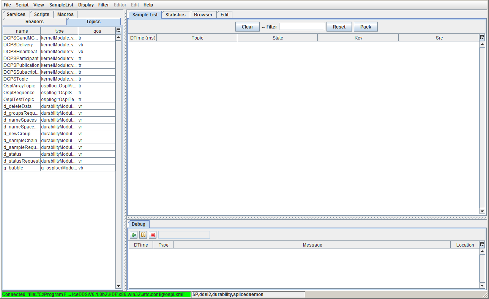
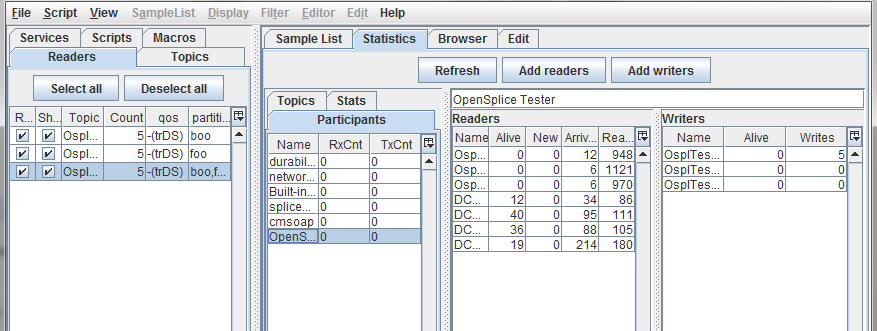

3.7.1. Main Window
Once started, Tester presents the user with the following main window.
Tester main window

The Command Menu (below) provides direct access to most of the Tester
capabilities.
Tester command menu

The Tester main window has three sub-frames:
- Main tabbed frame for selecting items from a list, such as topics,
scenarios, and readers or writers.
- Working area frame where you will do most of your work such as
editing scenarios, investigate samples, and capturing statistics
- Debug frame used to debug scripts and macros.
3.7.2. Overview Windows
The user can select the type of resource to work with by selecting tabs. These can be
the Services and Topics in the system, the Scripts and Macros they have installed, or
the Readers for the current Tester timeline.
Tester resource tabs
3.7.2.1. Services
Lists the installed services. This is a read-only list.
Tester Services list
3.7.2.2. Scripts
The script list provides a convenient way of selecting an existing script for editing
or execution. The list is filled at startup or when clicking the Refresh button. All
files in the specified script directory are added to the list. The script directory (or
directories) are specified in the preference page.
A script can be selected in the script editor by single-clicking the entry in the table.
When the entry is double-clicked the script is loaded in the script editor and
executed.
Tester scripts tab
3.7.2.3. Macros
The Macros List is similar to the Scripts List.
Tester macros tab
3.7.2.4. Topics
The topics list displays the list of registered topics.
Tester topics tab
3.7.2.5. Readers
The readers list displays the readers (and implicit topic writers) for the current
Tester timeline. The default name for a reader is the same as the name of the topic it
is subscribed to. For each reader the count of received samples (as available in the
sample list) is displayed. A check box is provided for changing the read state or the
show state. When Read is unchecked the reader stops reading topics. When Show is
unchecked the topic of that topic will not be displayed in the sample list.
Tester readers tab
3.7.3. Working Windows
These windows support testing activities.
3.7.3.1. Sample List Window
Used to view and generate samples for the current timeline (Readers).
Sample list window
3.7.3.2. Statistics Window
The statistics window provides statistics for the topics in use,
like write count, number of alive topics, etc.. Statistics
are gathered from the local copy of OpenSplice. To gather statistics
from remote nodes, use OpenSplice Tuner.
Statistics window

3.7.3.3. Browser Window
The browser window provides information about nodes, executables,
participants (applications), readers, writers and topics. Information
can be browsed by selecting a node/executable participant or a topic.
When an executable or participant is selected the reader and writer
lists (subscribed and published topics) for that executable/participant
are shown. Together with the topic name concise information about the
QoS and partition is shown. When the mouse cursor is hovered over the
QoS value the hint will show detailed information about the QoS.
When a topic is selected the list of participant readers (subscribe)
and writers (publish) are shown, together with concise information
about the QoS and partition. By selecting a row in either the reader
of writer list the compatible readers/writers will be shown in green
and non-compatible (by QoS/partition) readers/writers will be shown
in red.
Tester browser window
3.7.5. Other Windows
The following dialog windows will be used.
3.7.5.1. Add Reader Window
Used to create/define a new Reader.
The dialog provides a drop-down list of existing partitions to
choose to create the new Reader in.
Add Reader dialog
3.7.5.2. Batch Window
Used to Start a batch scenario and display the test results.
Batch Execute Scenarios window
3.7.5.3. Batch Results Window
Displays the detailed results of a batch of scripts.
Detailed individual test result can be viewed by double-clicking
on a test result.
Batch results window
Detailed Batch results log
3.7.5.4. Chart Window
Used to plot topic field values.
Topic field values graph
3.7.5.5. Edit Sample Window
Used to create samples for a selected topic.
Edit sample window
3.7.5.6. Topic Instance Window
The topic sample window is used for displaying field values of a topic.
It can be opened by double-clicking a sample in the sample list or by
pressing [F3] (additional) or [F2] (additional with compare) in
the sample list while a sample is selected. Special fields are
highlighted with colors:
Key field (Green)
Foreign key (Yellow)
Different (compare only) (Red)
Not existing (compare only) (Orange)
When a field is selected, [Ctrl+H] will toggle between normal and hexadecimal
representation, and [Ctrl+D] will toggle between normal and degrees/radians
representation.
{kind=link}
{kind=link}
{kind=link}
{kind=link}
{kind=link}
{kind=link}
{kind=link}
{kind=link}
{kind=link}
{kind=link}
{kind=link}
{kind=link}
{kind=link}
{kind=link}
{kind=link}
{kind=link}
{kind=link}
{kind=link}
{kind=link}